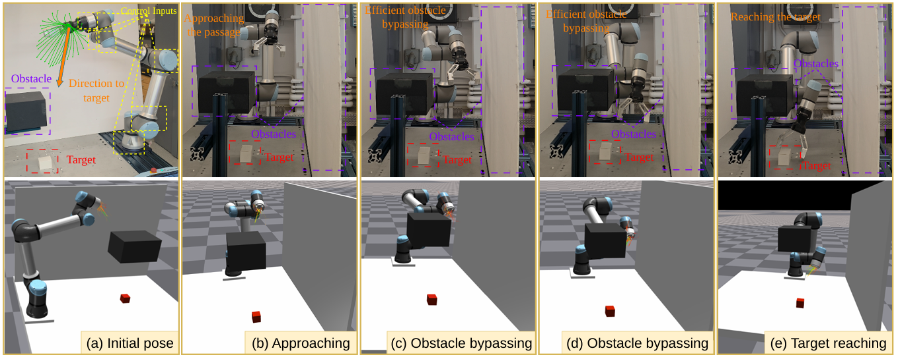
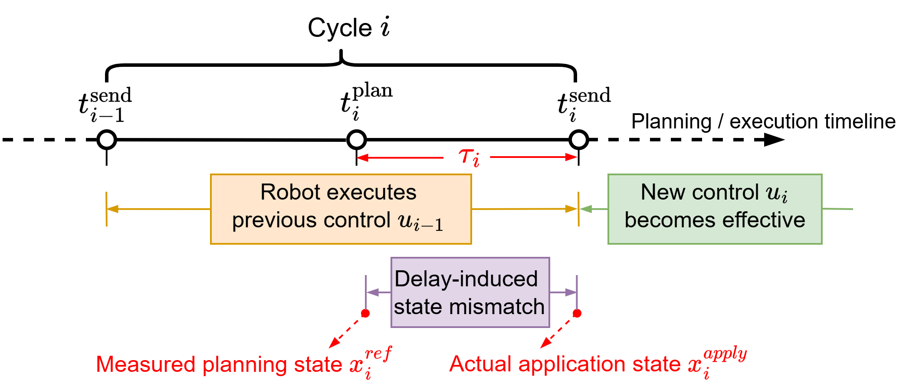
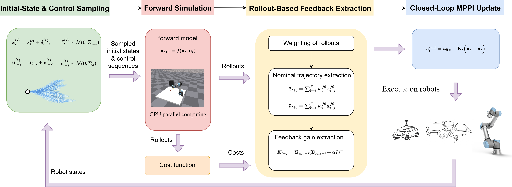
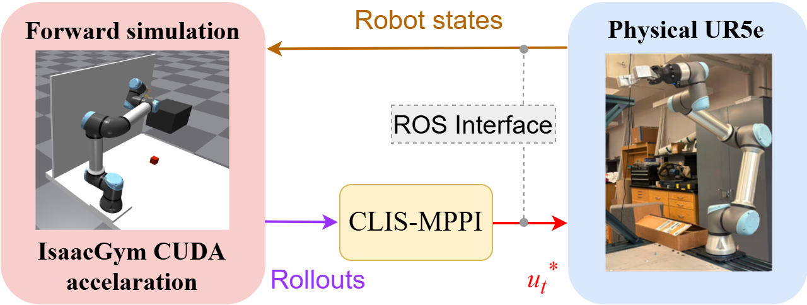
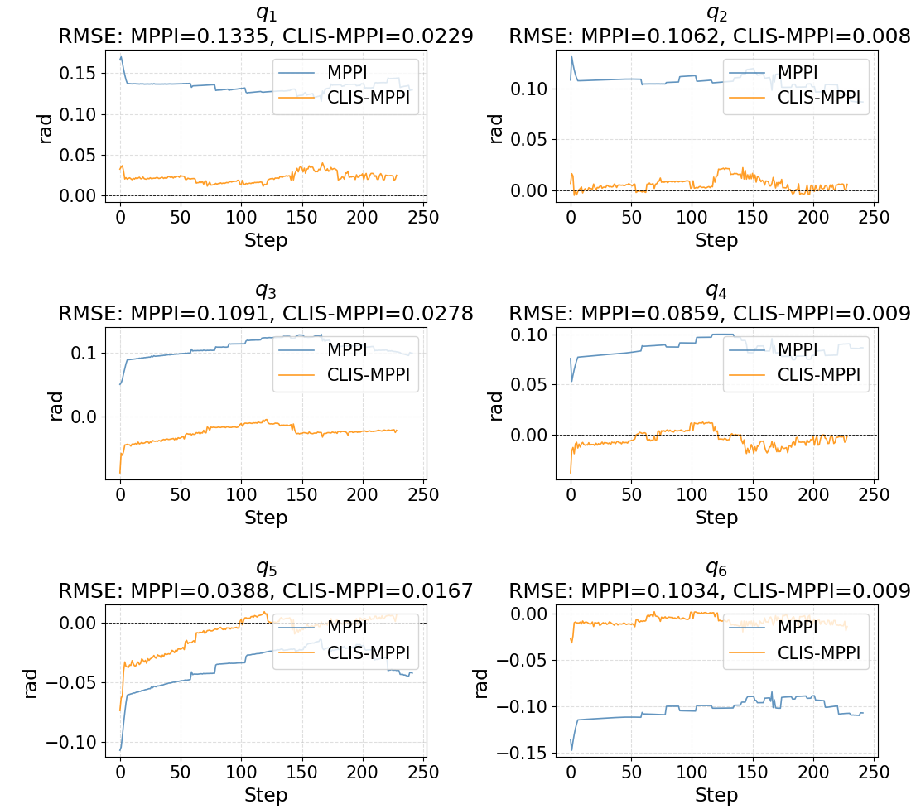
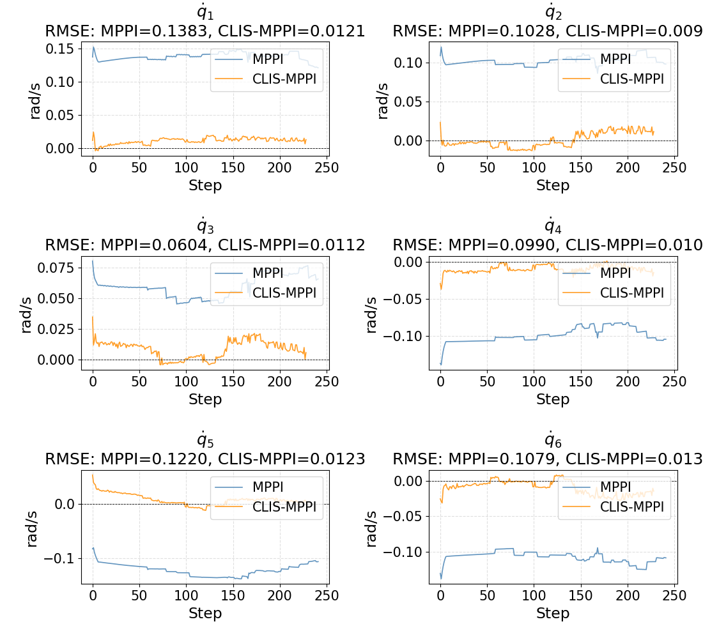
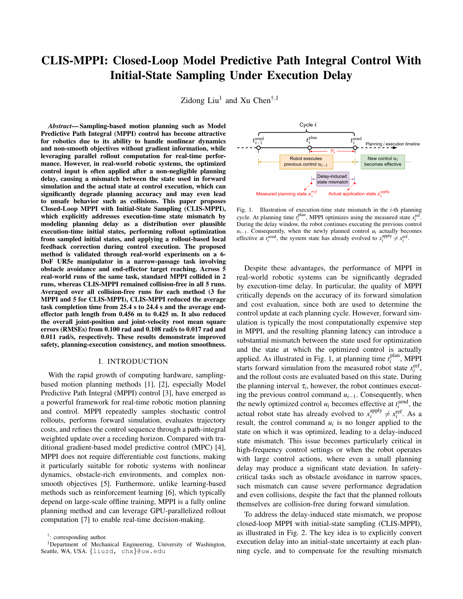

Delay-aware initial states
Represent execution-time state mismatch as a distribution of plausible initial states, and jointly sample initial-state and control perturbations for MPPI rollouts.
Department of Mechanical Engineering, University of Washington

Bringing planning and execution closer together.
Delay-aware sampling. Rollout-based feedback. Closed-loop control.

Hardware findings for the reported task; RMSE reductions are relative to standard MPPI.
What this work adds
Represent execution-time state mismatch as a distribution of plausible initial states, and jointly sample initial-state and control perturbations for MPPI rollouts.
Extract a nominal trajectory and local feedback gains from the weighted rollout distribution, then combine the MPPI feedforward update with online state-feedback correction.
Evaluate the combined formulation on a UR5e narrow-passage task, demonstrating improved collision avoidance and closer agreement between predicted and executed motion.
The challenge
By the time a new command takes effect, the state used to plan it can already be out of date. In a narrow passage, even a small deviation matters.

The approach
Account for uncertainty at the start of planning. Correct the remaining mismatch at execution.

Draw perturbed initial states around the measured state using delay-induced covariance, together with perturbed control sequences.
Run forward simulations in parallel, evaluate trajectory costs, and form an importance-weighted nominal state-control trajectory.
Compute regularized local feedback gains from weighted state-control covariance statistics of the rollouts.
Combine the feedforward command with a correction based on the current measured state at control execution.
utcmd = uff,t + Kt (xt − t)
The feedforward term provides predictive guidance; local feedback corrects execution-time state deviations.
From simulation to hardware
A tabletop obstacle and a vertical wall leave a narrow collision-free passage for the UR5e to reach a target cube.

Hardware demonstration
Approaching the obstacle, bypassing it through the gap, and reaching the target.
Experimental findings
Comparison with standard MPPI on the same real-world narrow-passage task.
| Metric | MPPI | CLIS-MPPI Ours |
|---|---|---|
| Collision-free runs | 3 / 5 | 5 / 5 |
| Mean planning time | 87.5 ms | 87.6 ms |
| Task completion time1 | 25.4 s | 24.4 s |
| End-effector path length1 | 0.456 m | 0.425 m |
| Joint-position RMSE2 | 0.100 rad | 0.017 rad |
| Joint-velocity RMSE2 | 0.108 rad/s | 0.011 rad/s |
1 Completion time and path length are averaged over each method’s collision-free runs: 3 for MPPI and 5 for CLIS-MPPI.
2 RMSE measures deviation from the forward-simulated reference state. The paper reports the error curves from the trial with median end-effector path length among the 3 valid collision-free trials.


Read the full work
CLIS-MPPI: Closed-Loop Model Predictive Path Integral Control With Initial-State Sampling Under Execution Delay
Read paper
Cite this work
@inproceedings{liu2026clismppi,
title = {{CLIS-MPPI}: Closed-Loop Model Predictive Path Integral
Control With Initial-State Sampling Under Execution Delay},
author = {Liu, Zidong and Chen, Xu},
booktitle = {65th IEEE Conference on Decision and Control (CDC)},
year = {2026},
eprint = {2610.21239},
archivePrefix = {arXiv},
primaryClass = {cs.RO},
url = {https://arxiv.org/abs/2610.21239}
}